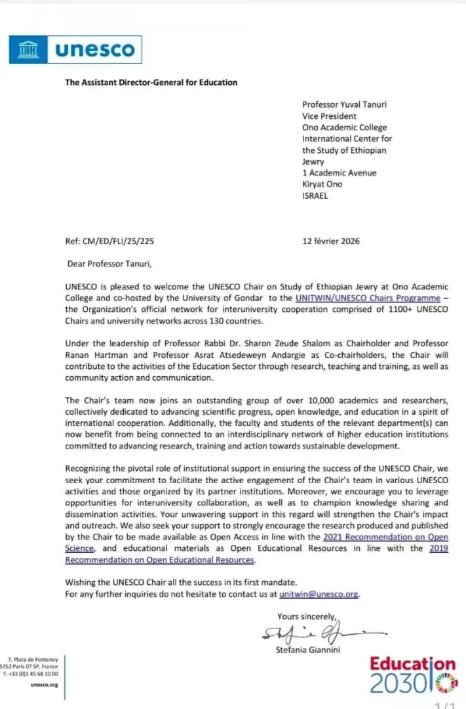
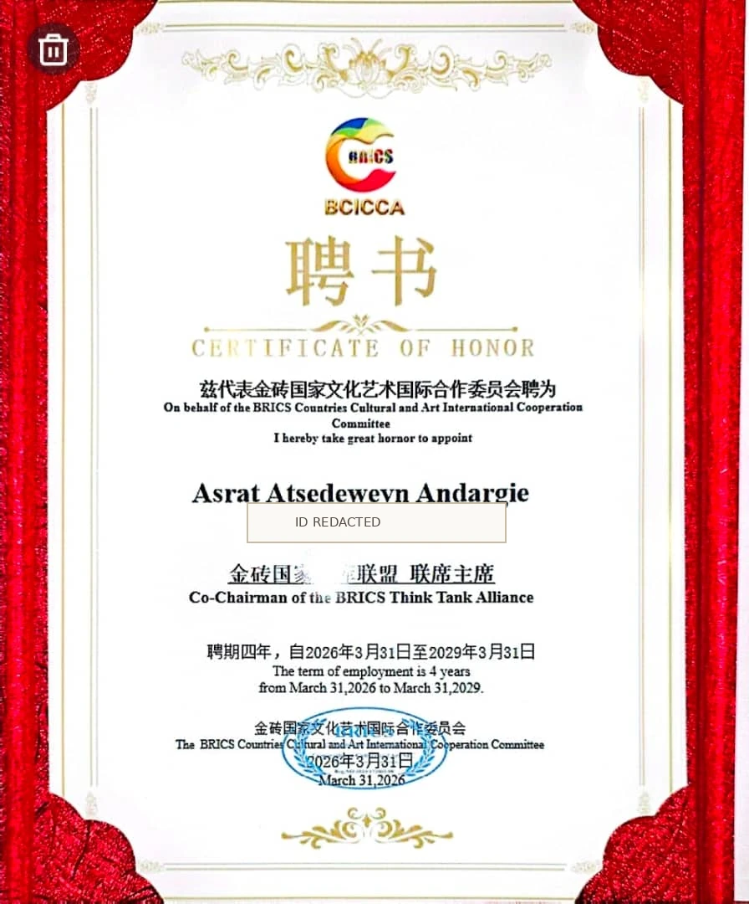

DOCTORATE
Ph.D. in Statistics
Andhra University
India03 / RESEARCH & RECOGNITION
Academic training in statistics, research in public health and a record of national and international engagement.
STATISTICS & PUBLIC HEALTH
Dr. Asrat is trained in statistics and has worked as an associate professor of biostatistics. His published research includes epidemiology, disease outcomes and statistical analysis in health settings.
Selected verified examples, not an exhaustive list. Dr. Asrat has indicated that newer publications will be added after details are supplied. His April 2024 CV reported 23 published articles and supervision of 19 master’s students as of that date.
EDUCATION
Degrees and professional development credentials listed in his April 2024 résumé.
Andhra University
IndiaAddis Ababa University
EthiopiaBahir Dar University
Ethiopia · Wording from 2024 CVAPPOINTMENTS & RECOGNITION
Two documents supplied by Dr. Asrat support recent international appointments and affiliations.

A Feb. 12, 2026, letter from UNESCO identifies Dr. Asrat as a co-chairholder of the chair, co-hosted by the University of Gondar and Ono Academic College.
View supplied letter ↗
Certificate dated March 31, 2026, issued by the BRICS Countries Cultural and Art International Cooperation Committee, with a stated term through March 31, 2029. The certificate is presented as an issuer-specific appointment, not as an appointment by BRICS governments.
View redacted certificate ↗AWARDS
Honors as listed in Dr. Asrat’s April 2024 curriculum vitae.
Ministry of Science and Higher Education, Ethiopia (as described in CV)
University of Gondar
Addis Ababa University
Amhara Regional State Government
PUBLICATIONS IN PROGRESS
Additional recent publications have been requested from Dr. Asrat and will be incorporated once the full citations and links are available.
Explore academic record ↗